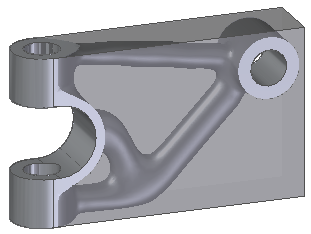
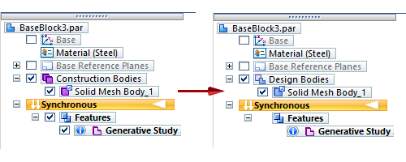

Print an optimized solid mesh body
You can use Solid Edge to send the optimized shape from a generative design study to a 3D printer, or you can save it (export it) in STL or 3MF file format for printing at a later time. This capability is based on your Generative Design license type.
Use 3D printing to create a prototype of the generated body
Before you export or print the optimized body, use this process to clean up the document and prepare the mesh body for printing.

-
By default, the generated body resides within a structural optimization study, not as an independent object. To print the solid mesh body as an independent part, right-click the Generative Study Result 1 entry in the Generative Design pane and choose Detach from Study
 .
.This removes the object from the study but not from the document. It is still listed in PathFinder under Features as a Generative Study Result.
-
To remove the generative study information from the document, right-click the study name and choose Delete.
-
To print the mesh body instead of the design body, you must delete the design body from the document. Before you do this, you may want to preserve the original design body by saving the document as a part file with a different file name. Then in the document to print, expand the Design Bodies node in PathFinder. Right-click the design body name and choose Delete.
-
To display the mesh body in the graphics window, expand the Construction Bodies node in PathFinder. Select the check box in front of the mesh body name.

-
Notice that PathFinder lists the generated body as a Solid Mesh Body 1, but it is under the Construction Bodies node. You must convert the construction body to a solid mesh body that can be 3D printed. To do this, right-click the Solid Mesh Body 1 and choose Toggle Design/Construction.
Notice the following changes in PathFinder:

-
Use the File menu→3D Print page to export the solid mesh body to STL or 3MF file format to be printed at a later time, or print it now to a 3D printer or using our partner service portal.
For more information and instructions, see Using the 3D Print page to Print directly to a 3D printer.